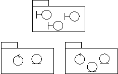
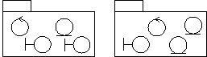

| Directriz: Paquete de diseño |
 |
|
| Elementos relacionados |
|---|
IntroducciónEl modelo de diseño se puede estructurar en unidades más pequeñas para facilitar la comprensión. Agrupando los elementos de modelo de diseño en paquetes y subsistemas y mostrando, a continuación, como se relacionan estas agrupaciones entre si, es más fácil de comprender la estructura global del modelo. Tenga en cuenta que un subsistema de diseño se modela como un componente que realiza una o más interfaces; para obtener más información, consulte el apartado Producto de trabajo: Subsistema de diseño y Directriz de producto de trabajo: Subsistema de diseño. Los paquetes de diseños, por otra parte, son sólo para agrupar. Visibilidad del contenido del paqueteUna clase contenida en un paquete puede ser pública o privada. Una clase pública se puede asociar a otra clase. Una clase privada se puede asociar sólo a clases contenidas en el paquete. Una interfaz de paquete consta sólo de las clases públicas del paquete. La interfaz del paquete (clases públicas) aíslan e implementan las dependencias de otros paquetes. De este modo, el desarrollo paralelo se simplifica porque puede establecer las interfaces antes, y los desarrolladores necesitarán conocer sólo los cambios de las interfaces de otros paquetes. Criterios de partición de paquetesPuede partir el modelo de diseño por una serie de motivos:
Clase de límite de paqueteCuando se distribuyen las clases de límite a paquetes, existen dos estrategias diferentes que se pueden aplicar; cuál escoger depende de si las interfaces del sistema pueden cambiar mucho en el futuro o no.
 Si el objetivo principal es simplificar los cambios de interfaz más importantes, las clases de límite se colocarán en uno (o varios) paquetes separados.
 Para simplificar los cambios a los servicios del sistema, las clases de límite se empaquetan con las clases con las que están funcionalmente relacionadas. Las clases de límite obligatorias que no están funcionalmente relacionadas con cualquier entidad- o clases de control, se deben colocar en paquetes separados, junto con las clases de límite que pertenecen a la misma interfaz. Si una clase de límite está relacionada con un servicio opcional, agrúpela con las clases que colaboran para proporcionar el servicio, en un subsistema separado. El subsistema se correlacionará con un componente opcional que se proporcionará cuando se solicite la funcionalidad opcional. Clases relacionadas con la funcionalidad de paqueteUn paquete debe identificarse para cada grupo de clases que estén funcionalmente relacionadas. Existen varios criterios prácticos que se pueden aplicar al juzgar si dos clases están funcionalmente relacionadas. Son, en orden de importancia decreciente:
Estos dos criterios determinan cuando dos clases no deben colocarse en el mismo paquete:
Cohesión del paquete de evaluaciónPrimero, todos los elementos de un paquete deben tener la misma condición de opcional: no puede haber elementos de modelo opcionales en un paquete obligatorio. Ejemplo La clase de entidad obligatoria Tipo de artículo tiene, entre otros, un atributo denominado Reabastecer el umbral. La función de reabastecer, sin embargo, es opcional en el sistema. Por lo tanto, Artículo debe dividirse en dos clases de entidad, donde la clase opcional se relaciona con la clase obligatoria. Un paquete que se considere obligatorio no puede depender de ningún paquete que se considere opcional. Por norma, dos actores diferentes no pueden utilizar un único paquete. El motivo para esto es que un cambio en el comportamiento de un actor no debería afectar también a otros actores. Existen excepciones a esta regla, como para los paquetes que constituyen servicios opcionales. Los paquetes de este tipo no deben dividirse, independientemente de cuantos actores lo utilicen. Por lo tanto, divida cualquier paquete, o clase, que utilizan varios paquetes, a menos que el paquete sea opcional. Todas las clases del mismo paquete deben estar funcionalmente relacionadas. Si ha seguido los criterios de la sección "Encontrar paquetes de clases funcionalmente relacionadas", las clases de un paquete estarán funcionalmente relacionadas entre si. Sin embargo, una clase particular puede contener por si misma "demasiado" comportamiento, o relaciones que no pertenecen a la clase. Parte de la clase debería eliminarse para convertirla en una clase totalmente nueva, o en cualquier otra clase, que probablemente pertenecerá a otro paquete. Ejemplo El comportamiento de una clase de control A, en un paquete no debe depender demasiado de una clase, B, en otro paquete. Para aislar el comportamiento específico B, la clase de control A debe dividirse en dos clases de control, A' y A". El comportamiento específico B se coloca en la nueva clase de control, A", que se coloca en el mismo paquete que B. La nueva clase A" también obtiene una relación, como generalización, con el objeto original A'.
Para aislar el comportamiento específico B, la clase de control A, a la que falta homogeneidad, se divide en dos clases de control, A' y A'. Descripción de las dependencias del paqueteSi una clase en un paquete tiene una asociación con una clase en un paquete diferente, estos paquetes dependen del otro. Las dependencias de los paquetes se modelan mediante la relación de dependencia entre los paquetes. Las relaciones de dependencia nos ayudan a valorar las consecuencias de los cambios: un paquete del que dependen muchos paquetes es más difícil de cambiar que uno del que no depende ningún paquete. Como se descubrirán varias dependencias como esta durante la especificación de los paquetes, estas relaciones pueden cambiar durante el trabajo. La descripción de una relación de dependencia puede incluir información sobre qué relaciones de clase han causado la dependencia. Como esto introduce información que es difícil de mantener, debe llevarse a cabo sólo si la información es pertinente y de valor. Ejemplo En el Sistema de gestión de almacén, existe la relación de dependencia del paquete Gestión de pedidos al paquete Gestión de elementos. Esta asociación surge porque la clase de entidad Pedido de Gestión de pedido tiene una asociación con la clase de entidad Tipo de elemento en el paquete de pedido.
El paquete Gestión de pedido depende de Gestión de elemento, porque existe una asociación entre dos clases de los paquetes. Acoplamiento del paquete de evaluaciónEl acoplamiento de paquetes es positivo y negativo: positivo, porque el acoplamiento representa la reutilización, y negativo, porque el acoplamiento representa las dependencias que dificultan el cambio y la evolución del sistema. Se pueden seguir algunos principios generales:
|
© Copyright IBM Corp. 1987, 2006. Reservados todos los derechos. |